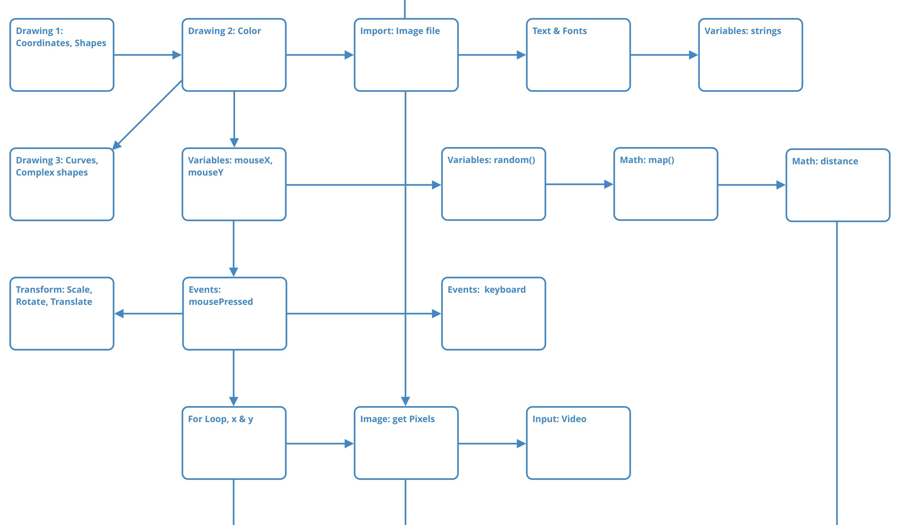
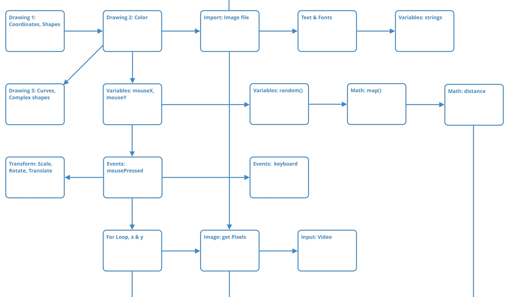

Hack Computer
2019
UX Design & User Research
HACK was a spin-off of Endless, a Linux distributor for emerging markets. The goal was to build an engaging, "hackable" OS geared to teaching kids about code and computational thinking.
HACK includes a whole cast of characters and a series of games that are solved by "hacking" the game's code. HACK is sold as an all-in-one package installed on an Asus laptop, with monthly content releases.
We had many ambitious ideas for building out the platform, but the team was abruptly downsized in June 2019.
www.hack-computer.com

Learning from Kids & Parents
At the time I joined, the team was deep in production mode to make their monthly game releases. My task was to untangle some of the more platform level UX challenges.
We had weekly recurring playtest/user research sessions with kids. I uncovered a lot of feedback that while the kids enjoyed the games, they would benefit from more explicit learning progression. Especially since our age range of 8-12 spans a wide range of grades, we needed to let kids have agency over their own speed and difficulty level.

Comparable Products
HACK isn't the first platform geared to teaching kids code. More than half of our playtesters were familiar with Scratch. In 2019, the problem isn't introducing coding, it's going deeper.
I also referenced Processing.org and Khan Academy, which have a proven track record of teaching coding in an approachable manner. Significantly, the Processing language is designed with teaching in mind, and is a logical next step to follow Scratch.
 

Learning Progression UX Proposal
I proposed that the team take a more lesson-focused approach in contrast to level-oriented gameplay. I borrowed many ideas from Khan Academy, but infused more of our existing visual and storytelling language.
Lessons
Explain a specific coding concept. For instance, how to use color() and fill().
Exercises
Quick puzzle like challenges to reinforce the lesson. These require only a few lines of code to complete. I took inspiration from physical activity books in how these are designed.
Projects
Projects are unlocked after a series of related lessons. A project has multiple steps and can guide kids to combining parts of previous code sketches.
Challenges
Challenges are extra credit. They can incorporate lessons from other school subjects, like art theory or science. The instructions are not as explicit as a Project, so the kid has to figure out some more steps herself.
Non-Linear Lesson Progression
The current Hack games were built with linear quests and levels, and that was a big problem because if a kid was stuck on a level, they couldn't do anything else.
I made a map of how coding lessons could be unlocked to enable exploration in multiple directions, much like how a map can be uncovered in a game. This was also useful in planning out how much content we were building.

A Coding Sketchbook
I proposed that instead of building a whole new game every month, we should build one app that would enable creating lesson and story content in a modular way, and in the future enable kids to publish their work.
This Code Sketchbook concept draws upon how Processing works in 'sketches', and also how scientists work in Jupyter notebooks.
To quickly validate this concept, I did a playtest in super low-fi fashion by using the online P5.js editor and walking through a Processing coding lesson. Our 13-year-old playtester was super enthusiastic about the "freedom" that coding in Processing allowed, and said that he preferred it to the game that he also tried.
Playtest notes here: Playtest_5_30_Nicholas.pdf
Storytelling with Code
The team had many ideas for stories and side quests that didn't fit within the linear episodes.
Why not use the code itself to express these ideas?
The Hack characters would also have their own 'sketchbooks' inside the app, where their work would fit their interestes and personality. Our engineers and writers really liked this idea, and it would be a fun and easy way for the whole team to contribute to the storytelling.

Toolbox UI Improvements
Before we could embark on making any more new apps, we needed to improve the existing product. The Toolbox is the "hacking" interface that the kids write code in.
Since visual design was already far along, I made wireframes to focus on the interaction level.
- Made the UI more modular. This would allow sections to be more easily locked and unlocked. And, it would make development easier.
- Cleaned up the code for variable names so that it's more learning friendly. Made sure the variable names matched up in the UI.
- Made the Reset button more prominent. (This was a problem found in playtesting.)
- Made the current Level more prominent.


Coding Helpers
The toolbox needed to be more like a kid-friendly IDE. Because we don't use blocks, we needed features for guiding learners through the common issues of typing code.
Here are a few of a number of UI concepts I wireframed for improved hints, error messages, and inline tools to make writing code a bit less daunting. I made these in low-fidelity to explore ideas with our engineers.